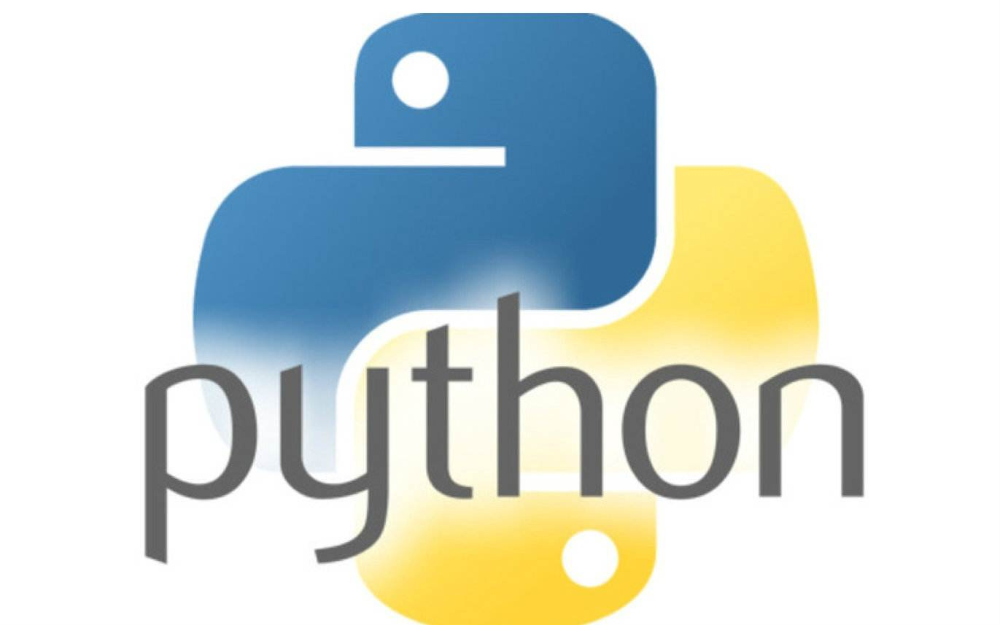

<!DOCTYPE html><html><head><meta charset="utf-8"><title>Java、Python和大数据，哪个发展前景最好？ | 技术学派</title><meta name="viewport" content="width=device-width,initial-scale=1,maximum-scale=1"><meta name="keywords" content="IT培训, Python, 大数据, 人工智能, Web前端, PHP, "><meta name="description" content="Java和Python是编程语言，而大数据则是一系列技术的整合，所以应该分开来看，三者并不能直接进行对比。三者实际的关系是目标和实现的包含关系。所以这个问题应该分为 Java和Python哪个发展前景好？大数据的发展前景如何？关于大数据的发展前景大数据并不是一种概念，而是一种方法论，一句话概括，就是通过分析和挖掘全量的非抽样的数据辅助决策。关于大数据的发展前景，这里引用马云说过的一句话：未来最大的"><meta property="og:type" content="article"><meta property="og:title" content="Java、Python和大数据，哪个发展前景最好？"><meta property="og:url" content="http://www.JiShuXuePai.com/blog/学习答疑/学习答疑/Java、Python和大数据，哪个发展前景最好？/index.html"><meta property="og:site_name" content="技术学派"><meta property="og:description" content="Java和Python是编程语言，而大数据则是一系列技术的整合，所以应该分开来看，三者并不能直接进行对比。三者实际的关系是目标和实现的包含关系。所以这个问题应该分为 Java和Python哪个发展前景好？大数据的发展前景如何？关于大数据的发展前景大数据并不是一种概念，而是一种方法论，一句话概括，就是通过分析和挖掘全量的非抽样的数据辅助决策。关于大数据的发展前景，这里引用马云说过的一句话：未来最大的"><meta property="og:locale" content="zh-CN"><meta property="og:image" content="http://www.jishuxuepai.com/blog/学习答疑/学习答疑/Java、Python和大数据，哪个发展前景最好？/01.jpg"><meta property="og:updated_time" content="2018-06-08T03:17:35.000Z"><meta name="twitter:card" content="summary"><meta name="twitter:title" content="Java、Python和大数据，哪个发展前景最好？"><meta name="twitter:description" content="Java和Python是编程语言，而大数据则是一系列技术的整合，所以应该分开来看，三者并不能直接进行对比。三者实际的关系是目标和实现的包含关系。所以这个问题应该分为 Java和Python哪个发展前景好？大数据的发展前景如何？关于大数据的发展前景大数据并不是一种概念，而是一种方法论，一句话概括，就是通过分析和挖掘全量的非抽样的数据辅助决策。关于大数据的发展前景，这里引用马云说过的一句话：未来最大的"><meta name="twitter:image" content="http://www.jishuxuepai.com/blog/学习答疑/学习答疑/Java、Python和大数据，哪个发展前景最好？/01.jpg"><link rel="stylesheet" href="/libs/bootstrap/bootstrap-grid.css"><link rel="stylesheet" href="/libs/font-awesome/css/font-awesome.min.css"><link rel="stylesheet" href="/libs/titillium-web/styles.css"><link rel="stylesheet" href="/libs/source-code-pro/styles.css"><link rel="stylesheet" href="/css/style.css"><script src="/libs/jquery/jquery.min.js"></script><link rel="stylesheet" href="/libs/lightgallery/css/lightgallery.min.css"><link rel="stylesheet" href="/libs/justified-gallery/justifiedGallery.min.css"><script>var _hmt=_hmt||[];!function(){var e=document.createElement("script");e.src="//hm.baidu.com/hm.js?4c1bd812de3c30edbaa2b803c66f0a04";var t=document.getElementsByTagName("script")[0];t.parentNode.insertBefore(e,t)}()</script></head></html><body><div id="wrap"><header id="header"><div id="header-outer" class="outer"><div class="container"><div class="container-inner"><div id="header-title"><h1 class="logo-wrap"><a href="/" class="logo"></a></h1></div><div id="header-inner" class="nav-container"><a id="main-nav-toggle" class="nav-icon fa fa-bars">菜单</a><div class="nav-container-inner"><ul id="main-nav"><li class="main-nav-list-item"><a class="main-nav-list-link" href="/">主页</a></li><li class="main-nav-list-item"><a class="main-nav-list-link" href="/edu/index.html">学编程</a></li><li class="main-nav-list-item"><a class="main-nav-list-link" href="/blog/">博客</a></li><li class="main-nav-list-item"><a class="main-nav-list-link" href="/tips.html">学习建议</a></li><li class="main-nav-list-item"><a class="main-nav-list-link" href="/about.html">关于</a></li></ul><nav id="sub-nav"><div id="search-form-wrap"><form class="search-form"><input type="text" class="ins-search-input search-form-input" placeholder="搜索"> <button type="submit" class="search-form-submit"></button></form><div class="ins-search"><div class="ins-search-mask"></div><div class="ins-search-container"><div class="ins-input-wrapper"><input type="text" class="ins-search-input" placeholder="想要查找什么..."> <span class="ins-close ins-selectable"><i class="fa fa-times-circle"></i></span></div><div class="ins-section-wrapper"><div class="ins-section-container"></div></div></div></div><script>window.INSIGHT_CONFIG={TRANSLATION:{POSTS:"文章",PAGES:"页面",CATEGORIES:"分类",TAGS:"标签",UNTITLED:"(未命名)"},ROOT_URL:"/",CONTENT_URL:"/content.json"}</script><script src="/js/insight.js"></script></div></nav></div></div></div></div></div></header><div class="container"><div class="main-body container-inner"><div class="main-body-inner"><section id="main"><div class="main-body-header"><h1 class="header"><a class="page-title-link" href="/categories/学习答疑/">学习答疑</a><div class="author"></div></h1></div><div class="main-body-content"><article id="post-学习答疑/Java、Python和大数据，哪个发展前景最好？" class="article article-single article-type-post" itemscope itemprop="blogPost"><div class="article-inner"><header class="article-header"><h1 class="article-title" itemprop="name">Java、Python和大数据，哪个发展前景最好？</h1></header><div class="article-meta"><div class="article-date"><a href="/blog/学习答疑/学习答疑/Java、Python和大数据，哪个发展前景最好？/" class="article-date"><time datetime="2018-06-07T11:19:56.000Z" itemprop="datePublished">2018-06-07</time></a></div></div><div class="article-entry" itemprop="articleBody"><p>Java和Python是编程语言，而大数据则是一系列技术的整合，所以应该分开来看，三者并不能直接进行对比。</p><p>三者实际的关系是目标和实现的包含关系。</p><p>所以这个问题应该分为 Java和Python哪个发展前景好？大数据的发展前景如何？</p><h3 id="关于大数据的发展前景"><a href="#关于大数据的发展前景" class="headerlink" title="关于大数据的发展前景"></a>关于大数据的发展前景</h3><p>大数据并不是一种概念，而是一种方法论，一句话概括，就是通过分析和挖掘全量的非抽样的数据辅助决策。</p><p>关于大数据的发展前景，这里引用马云说过的一句话：</p><blockquote><p>未来最大的资源就是数据，不参与大数据十年后一定会后悔。</p></blockquote><p>从这句话中可以看出马云对大数据是多么的推崇，而事实上，大数据在现在乃至未来十年，依然会很火。</p><p>大数据可以实现的应用可以概括为两个方向，一是精准化定制，二是预测。比如通过搜索引擎搜索同样的内容，每个人的结果是不同的，定制新闻服务或网游。再比如精准营销，百度推广，淘宝推广，或者你到了一个地方，自动推荐周边的消费设施等。</p><blockquote><p>大数据能火多久完全决定于他的应用方向能火多久，或者可以说是大数据的取代者何时能火！<br>一、大数据的应用方向和未来趋势<br>1、应用方向：营销、金融、工业、医疗、教育、交通、智慧生活、执法、体育、政府、旅游等等，大数据是真正的覆盖全行业，也就是未来所有的行业都需要大数据的支撑。<br>2、未来趋势：传感器——数据服务——人工智能——社会关系——人类文明<br>从大数据的应用方向和未来发展趋势可以看出来，在未来10年或20年社会及企业发展过程中，大数据是我们无法离开的技术。云服务、人工智能越来越火，没有大数据谈何云服务，没有大数据谈何人工智能？<br>由此看出大数据能火多久的主要决定因素就是有没有他的取代者出现。<br>二、大数据的取代者什么时候能火？<br>就目前科技飞速发展的现状来看，大数据技术会不会出现取代者，相信没有人敢特别肯定的说没有，但也没有人敢肯定的说有，这就如同10几年前的手机，在当时没有人能够想象到手机有一天会成为一部“无所不能”的机器。<br>但是就目前来看，大数据还没有取代者！</p></blockquote><p>不少想学习大数据的零基础学员都知道，学大数据部分课程之前要先学习一种计算机编程语言。大数据的开发需要编程语言的基础，因为大数据的开发基于一些常用的高级语言，比如Java、R语言和python。不论是大数据生态架构，还是数据挖掘，都需要有高级编程语言的基础。因此，如果想学习大数据开发，还是需要着手学习一门高级语言。例如：Python。</p><h3 id="Java的发展前景"><a href="#Java的发展前景" class="headerlink" title="Java的发展前景"></a>Java的发展前景</h3><p></p><p>Java是一门面向对象编程语言，不仅吸收了C++语言的各种优点，还摒弃了C++里难以理解的多继承、指针等概念，因此Java语言具有功能强大和简单易用两个特征。Java语言作为静态的面向对象编程语言的代表，极好地实现了面向对象的理论，允许程序员以优雅的思维方式进行复杂的编程。Java具有简单性、面向对象、分布式、健壮性、安全性、平台独立与可移植性、多线程、动态性等等特点 。</p><p>Java的发展方向：web开发、大数据开发、安卓开发、服务器开发等等。</p><p>“Java”作为所有编程语言中最热门技术，可以说它无处不在。在所有程序员中，Java开发工程师就占据20%的比例。</p><h3 id="Python的发展前景"><a href="#Python的发展前景" class="headerlink" title="Python的发展前景"></a>Python的发展前景</h3><p></p><p>Python是一种面向对象的解释型计算机程序的设计语言, Python具有丰富和强大的库。它常被称为胶水语言，能够把其他语言制作的各种模块很轻松地结合在一起。</p><p>Python可以做日常任务，比如自动备份MP3；可以做网站，很多著名的国外网站YouTube就是Python写的；可以做网络游戏的后台，很多在线游戏的后台都是Python开发的。</p><p>Python的发展方向：数据分析、人工智能、web开发、测试、运维、web安全、游戏制作等等。</p><p>另外说下，Python目前的发展趋势非常好，伴随着大数据和人工智能的发展，Python的应用将得到更广泛的普及，目前在落地应用中已有不少Python开发的项目了。所以就目前的趋势来说，Python要比Java更具前景一些。</p><h3 id="最后"><a href="#最后" class="headerlink" title="最后"></a>最后</h3><p>好啦，以上三个目前最火的方向已经给大家都阐述清楚，最终的选择权还在你们自己的手中！但并不是说哪个前景好就去学哪个，最重要的还是兴趣。有句话说得好，“兴趣是最好的老师”，只有你对某个语音感兴趣了，才有学习的动力，才能坚持下去。</p><p>如果仅仅是为了发展前景好就去学习自己不感兴趣的东西，那么很可能半途而废，最终一事无成。适合自己才是最重要的！</p></div><footer class="article-footer"><a data-url="http://www.JiShuXuePai.com/blog/学习答疑/学习答疑/Java、Python和大数据，哪个发展前景最好？/" data-id="cji5fcrst0000jhfyredwdfj5" class="article-share-link"><i class="fa fa-share"></i>分享到</a><script>!function(n){n("body").on("click",function(){n(".article-share-box.on").removeClass("on")}).on("click",".article-share-link",function(t){t.stopPropagation();var e,a=n(this),o=a.attr("data-url"),r=encodeURIComponent(o),i="article-share-box-"+a.attr("data-id"),s=a.offset();if(n("#"+i).length){if((e=n("#"+i)).hasClass("on"))return void e.removeClass("on")}else{var l=['<div id="'+i+'" class="article-share-box">','<input class="article-share-input" value="'+o+'">','<div class="article-share-links">','<a href="https://twitter.com/intent/tweet?url='+r+'" class="article-share-twitter" target="_blank" title="Twitter"></a>','<a href="https://www.facebook.com/sharer.php?u='+r+'" class="article-share-facebook" target="_blank" title="Facebook"></a>','<a href="http://pinterest.com/pin/create/button/?url='+r+'" class="article-share-pinterest" target="_blank" title="Pinterest"></a>','<a href="https://plus.google.com/share?url='+r+'" class="article-share-google" target="_blank" title="Google+"></a>',"</div>","</div>"].join("");e=n(l),n("body").append(e)}n(".article-share-box.on").hide(),e.css({top:s.top+25,left:s.left}).addClass("on")}).on("click",".article-share-box",function(t){t.stopPropagation()}).on("click",".article-share-box-input",function(){n(this).select()}).on("click",".article-share-box-link",function(t){t.preventDefault(),t.stopPropagation(),window.open(this.href,"article-share-box-window-"+Date.now(),"width=500,height=450")})}(jQuery)</script></footer></div></article><section id="comments"><div id="gitalk_frame"></div></section></div></section><aside id="sidebar"><a class="sidebar-toggle" title="Expand Sidebar"><i class="toggle icon"></i></a><div class="sidebar-top"><p>关注我 :</p><ul class="social-links"><li><a class="social-tooltip" title="火星时代" href="http://edu.hxsd.com/edunew/topics/webfull/index.html" target="_blank"><i class="icon fa fa-dribbble"></i></a></li><li><a class="social-tooltip" title="weibo" href="#" target="_blank"><i class="icon fa fa-weibo"></i></a></li><li><a class="social-tooltip" title="rss" href="/atom.xml" target="_blank"><i class="icon fa fa-rss"></i></a></li></ul></div><nav id="article-nav"><a href="/blog/学习答疑/学习答疑/想进入大数据领域，大数据的五大问题你了解吗？/" id="article-nav-newer" class="article-nav-link-wrap"><strong class="article-nav-caption">下一篇</strong><p class="article-nav-title">想进入大数据领域，大数据的五大问题你了解吗？</p><i class="icon fa fa-chevron-right" id="icon-chevron-right"></i> </a><a href="/blog/学习答疑/学习答疑/现在为什么越来越多的人想学编程？/" id="article-nav-older" class="article-nav-link-wrap"><strong class="article-nav-caption">上一篇</strong><p class="article-nav-title">现在为什么越来越多的人想学编程？</p><i class="icon fa fa-chevron-left" id="icon-chevron-left"></i></a></nav><div class="widgets-container"><div class="widget-wrap widget-list"><h3 class="widget-title">分类</h3><div class="widget"><ul class="category-list"><li class="category-list-item"><a class="category-list-link" href="/categories/animate/">animate</a><span class="category-list-count">17</span></li><li class="category-list-item"><a class="category-list-link" href="/categories/git/">git</a><span class="category-list-count">1</span></li><li class="category-list-item"><a class="category-list-link" href="/categories/html/">html</a><span class="category-list-count">2</span></li><li class="category-list-item"><a class="category-list-link" href="/categories/js/">js</a><span class="category-list-count">5</span></li><li class="category-list-item"><a class="category-list-link" href="/categories/php/">php</a><span class="category-list-count">3</span></li><li class="category-list-item"><a class="category-list-link" href="/categories/vue/">vue</a><span class="category-list-count">1</span></li><li class="category-list-item"><a class="category-list-link" href="/categories/学习答疑/">学习答疑</a><span class="category-list-count">32</span></li><li class="category-list-item"><a class="category-list-link" href="/categories/插件资源库/">插件资源库</a><span class="category-list-count">4</span></li></ul></div></div><link rel="stylesheet" href="/css/tech/toc.css"><div class="widget-wrap widget-list widget-toc"><h3 class="widget-title">目录</h3><div class="widget"><div class="toc"></div><link rel="stylesheet" href="https://cdnjs.cloudflare.com/ajax/libs/tocbot/3.0.5/tocbot.css"><script src="https://cdnjs.cloudflare.com/ajax/libs/tocbot/3.0.5/tocbot.min.js"></script><script>$(function(){$(".main-body-content").find("h1,h2,h3").each(function(t){$(this).attr("id")||$(this).attr("id","list"+t)}),tocbot.init({tocSelector:".toc",contentSelector:".main-body-content",headingSelector:"h1, h2, h3",collapseDepth:2,positionFixedSelector:".widget-toc",fixedSidebarOffset:595,includeHtml:!1})})</script></div></div><div class="widget-wrap widget-list"><h3 class="widget-title">标签</h3><div class="widget"><ul class="tag-list"><li class="tag-list-item"><a class="tag-list-link" href="/tags/C/">C</a><span class="tag-list-count">1</span></li><li class="tag-list-item"><a class="tag-list-link" href="/tags/go/">go</a><span class="tag-list-count">1</span></li><li class="tag-list-item"><a class="tag-list-link" href="/tags/php/">php</a><span class="tag-list-count">1</span></li><li class="tag-list-item"><a class="tag-list-link" href="/tags/python/">python</a><span class="tag-list-count">14</span></li><li class="tag-list-item"><a class="tag-list-link" href="/tags/web前端/">web前端</a><span class="tag-list-count">2</span></li></ul></div></div><div class="widget-wrap widget-float"><h3 class="widget-title">标签云</h3><div class="widget tagcloud"><a href="/tags/C/" style="font-size:10px">C</a> <a href="/tags/go/" style="font-size:10px">go</a> <a href="/tags/php/" style="font-size:10px">php</a> <a href="/tags/python/" style="font-size:20px">python</a> <a href="/tags/web前端/" style="font-size:15px">web前端</a></div></div><div class="widget-wrap widget-list"><h3 class="widget-title">链接</h3><div class="widget"><ul><li><a href="http://edu.hxsd.com/edunew/topics/webfull/index.html">火星时代</a></li></ul></div></div></div></aside><script>$(function(){$(window).scroll(function(){240<=$(document).scrollTop()?($("#sidebar .sidebar-toggle").addClass("fix"),"block"==$("#sidebar .sidebar-toggle").css("display")&&$(".is-position-fixed").css("top","35px")):$("#sidebar .sidebar-toggle").removeClass("fix")})})</script></div></div></div><footer id="footer"><div class="top"><div class="inner"><div class="list"><div class="left clearfix"><dl><dt>关于我们</dt><dd><a href="/about.html" target="_blank">公司简介</a></dd><dd><a href="edu/index.html" target="_blank">联系我们</a></dd></dl><dl><dt>校区攻略</dt><dd><a href="edu/index.html" target="_blank">校区环境</a></dd><dd><a href="edu/index.html" target="_blank">住宿攻略</a></dd><dd><a href="edu/index.html" target="_blank">来校路线</a></dd></dl><dl><dt>课程培训</dt><dd><a href="edu/python.html" target="_blank">Python</a></dd><dd><a href="edu/python.html" target="_blank">Web前端</a></dd><dd><a href="edu/python.html" target="_blank">PHP</a></dd><dd><a href="edu/python.html" target="_blank">人工智能</a></dd><dd><a href="edu/python.html" target="_blank">大数据</a></dd></dl><dl><dt>常见问答</dt><dd><a href="edu/index.html" target="_blank">学费学时</a></dd><dd><a href="edu/index.html" target="_blank">学习方法</a></dd></dl></div></div><div class="tel"><tel>176-0025-8815</tel><span>北京市海淀区杏石口路81号火星时代大厦</span></div><div class="weixin"><div class="w1"> <span>头条号</span></div><div class="w1"> <span>官方微信</span></div></div></div></div><div class="bot">Copyright 2018 技术学派 京ICP备15015508号-3</div></footer><link rel="stylesheet" href="https://unpkg.com/gitalk/dist/gitalk.css"><script src="https://unpkg.com/gitalk/dist/gitalk.min.js"></script><script>var gitalk=new Gitalk({clientID:"2fbbb9980b49019d99a7",clientSecret:"152dd10e83ef6595761ea2185304f9ac8263573f",repo:"jsxp",owner:"li-kang",admin:["li-kang"]});gitalk.render("gitalk_frame")</script><script src="/libs/lightgallery/js/lightgallery.min.js"></script><script src="/libs/lightgallery/js/lg-thumbnail.min.js"></script><script src="/libs/lightgallery/js/lg-pager.min.js"></script><script src="/libs/lightgallery/js/lg-autoplay.min.js"></script><script src="/libs/lightgallery/js/lg-fullscreen.min.js"></script><script src="/libs/lightgallery/js/lg-zoom.min.js"></script><script src="/libs/lightgallery/js/lg-hash.min.js"></script><script src="/libs/lightgallery/js/lg-share.min.js"></script><script src="/libs/lightgallery/js/lg-video.min.js"></script><script src="/libs/justified-gallery/jquery.justifiedGallery.min.js"></script><script src="/js/main.js"></script></div></body>